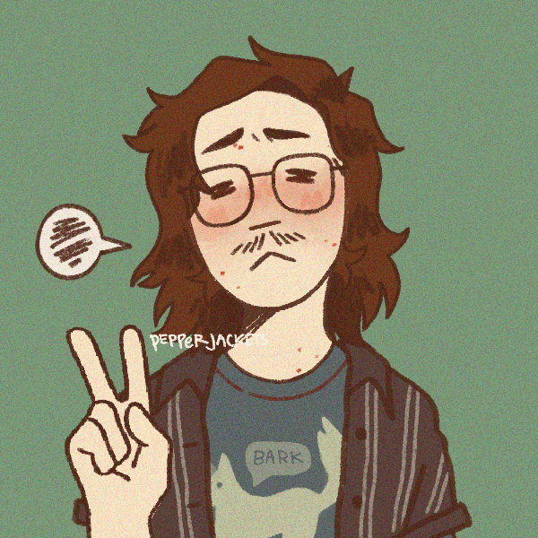

- Name / Dorian
- Zodiac / Aries
- Origin / Ukraine
- Location / USA
- Timezone / EST
- Fluent / EN/RU/UA
- Learning / FR
- Pronouns.Page
"Where does he spend is summers?"
You can find him wandering the vacant
hallways of his quaint local library,
with the newest issue of The New Yorker in hand.
He burns with youthful excitement and passion
of romantic spirit. He is a lad of candour,
with an impassioned heart.
A chronic insomniac, He habitually stays up
till all hours, writing songs and watching
art-house films. He is deeply absorbed in
the humanities and romantic era literature.